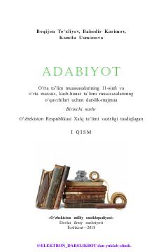

1A11-sinf o‘quvchilari uchun mo‘ljallangan rasmiy adabiyot darslik-majmuasi.
Ushbu darslik-majmua o‘rta ta’lim muassasalarining 11-sinf o‘quvchilari uchun mo‘ljallangan bo‘lib, o‘zbek va jahon adabiyoti namunalarini o‘rganishga bag‘ishlangan. Kitobda mumtoz va zamonaviy adabiyotimizning sara asarlari tahlil qilinib, o‘quvchilarning adabiy-estetik tafakkurini rivojlantirish ko‘zda tutilgan. Darslik Xalq ta’limi vazirligi tomonidan tasdiqlangan bo‘lib, mustaqil fikrlash va kitobxonlik madaniyatini oshirishga xizmat qiladi.